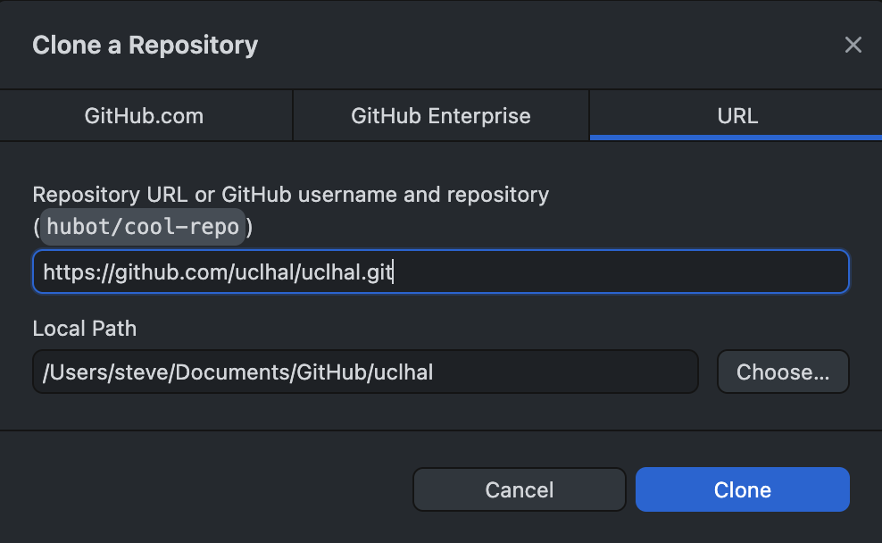

Onboarding 1
Congratulations
I’m not sure how you got here, but whatever happened then ‘Welcome’.
We assume that you’re here because you are going to start work with our data science team. This lesson will set-out some pre-requisites, and series of short lessons. Your first task will be to learn how to use GitHub for collaboration.
Aim
You are going to create your user own user page, and publish that to the lab website.
Pre-requisites
- you should be working from your own computer
- you will need access to GitHub including a user account
- you will need the following applications.
- a text editor. We recommend Visual Studio Code because it’s free, cross-platform, well supported, and generally works well. But feel free to use any editor you like.
- a ‘git’ graphical user application (GUI). You could try GitHub desktop. You could also just use the integrated git tools within VS Code.
- a terminal application (e.g. ‘Terminal.app’ on Mac OS).
- you should know how to write in ‘Markdown’. See the background here, or review their 60 second(!) lesson, or run through the 10 minute interactive tutorial.
If this is already all new to you then
- check out Software Carpentry’s tutorial Unix Shell (lessons 1-3 will get you started)
- similarly review their tutorial on Version Control with Git. You will need to run through lessons 1-3 but the ‘juice’ starts from Lesson 4.
Lesson plan
- Set-up this lesson
<-- you are here - Install Quarto (our documentation and website system) the next lesson
- Write and publish your first page the last lesson
Lesson 1
Given the pre-requisites above then you need to clone this repository to your local machine. We’re going to assume you’re using GitHub desktop where you will need to select the File > Clone Repository… menu, and then the URL tab of the dialog box. Paste the URL of the repository (https://github.com/uclhal/uclhal) into the first text field, and then choose a local path (on your machine) to store your work.

The step above will clone the main branch of the repository. This branch represents the version of the work in the repository that we use to run the website. You should never edit or change the main branch directly. Instead we ‘check out’ a separate branch, prepare our work safely there, and then create a ‘pull request’ to ask a collaborator to merge work from our branch into the main branch. This review process protects us all.
For now, you just need to checkout a new branches after you clone the repository. The git command would be git checkout -b my-new-branch, but it’s typically easier to use the git GUI (i.e. GitHub desktop or similar) that you installed above.

Next …
You are ready to move to the next lesson.